Play! (nostalgy) | Vs. Pokémon | DNA sample

Battle digital animals created since 2010 by Daniella Mesquita.

Test Phonemon Blue game? Play!
To make it work, you need to resize your window to simulate the display of a phone.
Featured Phonemons


1st generation - 2011

Bulball
Although this drawing is from 2013, Bulball was made in 2011.

Waterain
2015's redraw of Waterain.

Bulbomb
I don't remember how Bulbomb (or Bomball) looked like in 2011, so in 2015 I re-drew it.
2nd generation - 2012-2013
2012
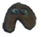
Leizo

Leanatan
Leizo then Leanatan had their third evolution stage: Leira. But I considered it weird so I didn't scanned it.

Bughost

Gruboo
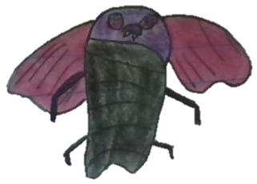
Mothaunt
2013
Onionut
As Bulball was the first mon (and also the first characters to appear in Plasmmer - Plasma in 2011), in 2013 (which I consider the peak of Phonemon and its beautiest mons), I thought it deserved its evolutions!
Trivia: I've printed stickers of my favorite Phonemons of 2013. My school class crush Paula loved Onionut so much that she brought it to her house to stick into the house's fridge.

Ballbull

Dewhale
Dewhale was based in a character (PRB the whale) I draw since my age of 4 yo. I just changed the colors and the arms/legs.

Lizardeep
The drawing of the Dewhale's third evolution stage was lost. Like what happened to my 2010's papers, my 2013's papers were all lost but luckily I could recover the majority through scans available on Blogger; there's a possibility of more lost but RECOVERABLE mons so I'll futurely look at my Facebook Messenger media!

Firember
Dogleed

Pandog
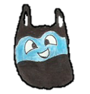
Bagust
When there were wind storms in my city, I loved to release supermarket/mart bags and see'm flying; then Bagust was based on this fact. Its a bag who fly.

Gruboll
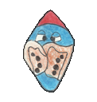
Boboll

Borboll

Paulavada
Its random name came from a joke my school class colleagues made in 2012. Please don't ask me in what person this mon is based off, pls 🙏

Kornative

Inflarat

Capsuled

Carpretty
Re-draw of a mon submitted by an Internet friend. I do still have these Messenger messages stored so the history of this mon is fully preserved.

Nutiny

Nutall

Volcanut

Paguroil
The evolutions of Volcanut and Paguroil were lost in 2015/2016, together with all of the 2013's papers. 2016's Volcactus may be an answer to Volcanut's missing evolution!
3rd generation - 2014-2015
2014

Gelamp ♀

Gelamp ♂
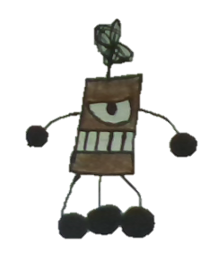
Batebola

Lightall
By this drawing I can be sure I was in a very disturbed state of mind in 2014 😑

Planterrain

Anchorubber
2015

Voltiny

Volturbo

Volturbillion
I never forget that a poor stranger brought back my lost phone, but my rich uncle never brought back my 2015's paper I left on his Honda car.
The previous drawings of Voltiny, Volturbo and Volturbillion were lost in the same year they were drawn; I had to "re-draw" based in my memory. The original were drawn in January 2015 when I was hosted in the house of my poor uncle here.
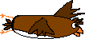
Birdumont

Platrans
Birdumont and Platrans share something in common: both were drawn in pixels (MS Paint) and were made to test Phonemon Blue's features!

Creamini
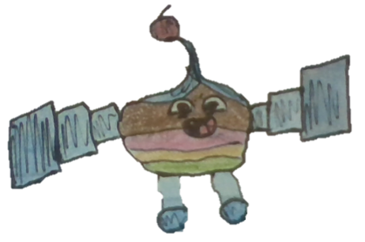
Icecreamadam

Mistiny

Cloudust
4th generation - 2016-2017
2016

Etsect

Volcactus

Flashroom

Buzzaku
These mons were drawn when I was hosted in the house of my aunt in Curitiba, and they are result of one of the happiest times of my life. These mons have the spiritual vibes on my 2013's mons. The only mons that after 2016 came close to my 2013's mons, are the 2022's ones.

Shrimpider

Plantabacaxi

Wormud
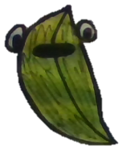
Bulboll

Fortfly
Leafly
2017
 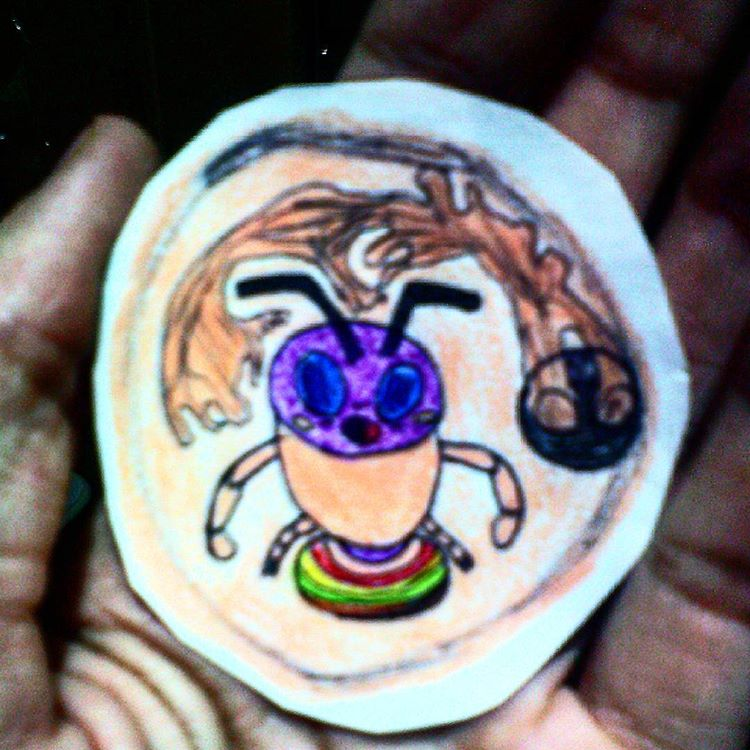
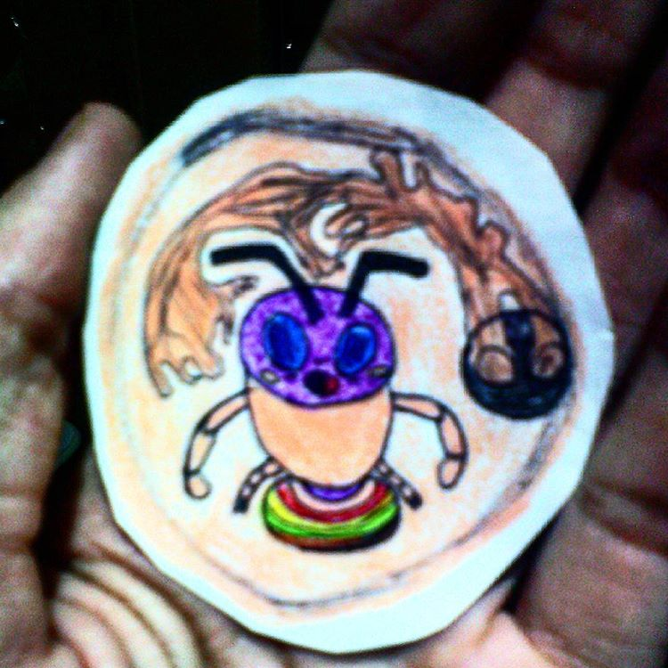 
Symbiant

Gastropad


Synapscizor
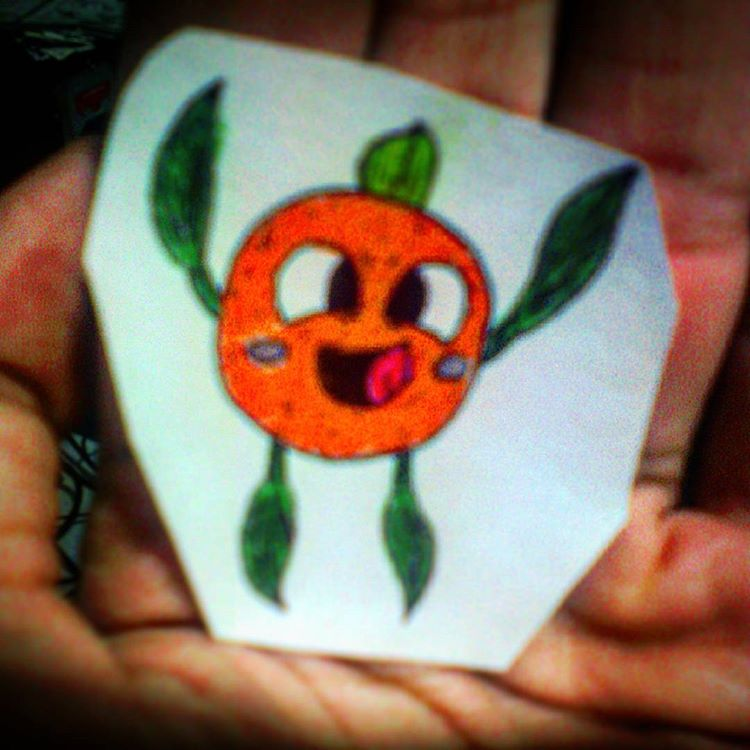 
Ghostange

Pherreo
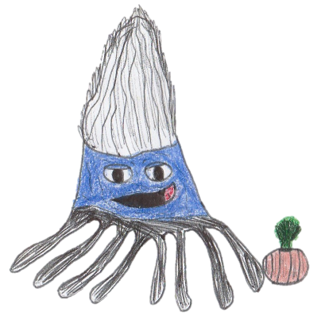
Lulala

Vamporo
These two mons were based in an international event happening in my city Curitiba, where later came the "plot twist" I was already aware of since the begin: it was the anti-corruption palladine vampire who was the corrupt 🤷♀️


"17076353_1815733805356407_5434443950947565568_n" (undefined name)

"16906845_386970035000124_6332974791720435712_n" (undefined name)

"IMG_20170605_0009" (undefined name)

"IMG_20170605_0011" (undefined name)

"IMG_20170605_0001" (undefined name)
5th generation - 2018-2019
2018

Nat
This mon was drawn in MS PowerPoint to be a SuperSticker (stickers that can reproduce) for my Communicator messenger project.

Bottlegg
This should be considered the official declared first Phonemon/Tamigucho of 2018 (because Nat originally wasn't made to be a mon).

"broken bottle" (undefined name)
Hey, fanfaremen: don't break beverage bottles in a party: you may discover an infuriated Tamigucho

Wheelama
Hmm, it looks like a wheel and a slug 😜

Jumpillar
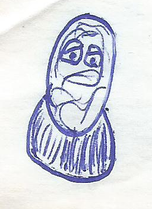
Jumpod

Butterocket

Envelair
Probably this mon was made to introduce the paper type (as there's also the rubber elementar type).

Glasshield
Okay, I thought it was 2014 but it was 2018 which gave us the weirdest mons (also 2019 and 2020)
But here's the good news I noticed right now: their weirdness have the same vibes of my 2011's mons! 🪞

Shirtiny

Shirteen
I love how this mon is similar to 2013's Bagust 🖤💙

"Windwear" (undefined name)

"rubber horse 1" (undefined name)

"rubber horse/spider 2" (undefined name)
Probably this was a redraw of a 2015's lost mon (I wanted to make a rubber spider that works as a horse to transport ppl and stuff).
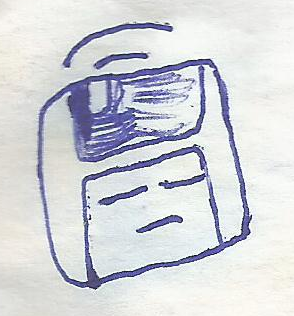
Floppyears
As Pokemon have Porygon and as in 2022's Tamiguchos we can have a pet rock, why not a psychic floating floppy disk? 💾

"seed" (undefined name)

"sand slug" (undefined name)

"tree slug" (undefined name)


"wanna walking seed" (undefined name)

"well walking seed" (undefined name)

First concept of the 2018's mons, in a draft

Draft and idea for Phonemon cards, the first time featuring the brand new Bottlegg 🍾

Some egg design for the 2018 mons
2019
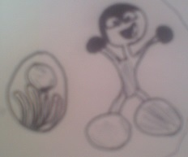
q-Bit
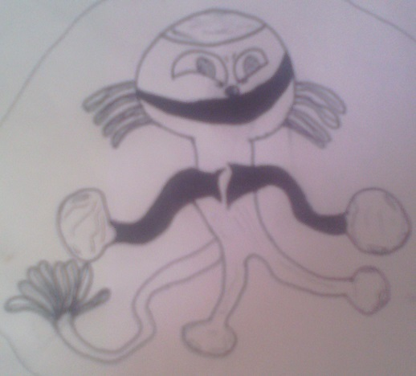
Qrosstum


Shardy
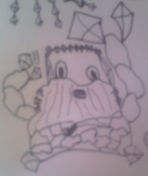
Crabstone
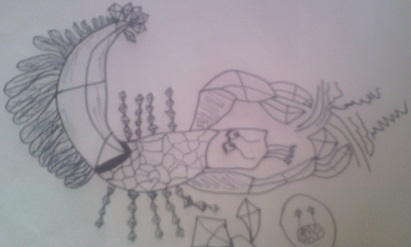
Camerock

Potaseal

Flappylipe

Lucaseal
Okay, Lucaseal will need a re-draw. Seriously.

"Flyineto" (undefined name)
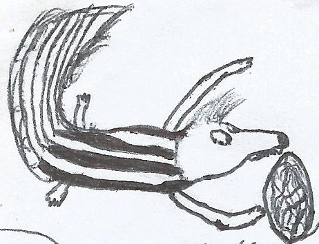
"gamba" (undefined name)
Some of these mons will need a redraw, too.

Poopmon
"Amazing" how the 2019's mons started with q-Bit/Qrosstum and ended in IrmaosNeto/Poopmon :P

"muricoca" (undefined name)
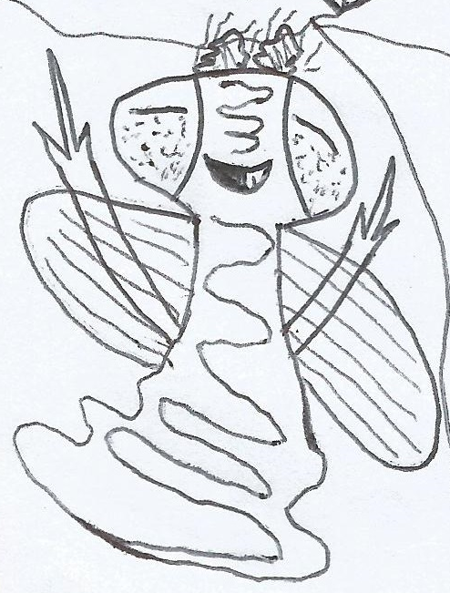
"cicoco" (undefined name)

"little poop" (undefined name)

"tatu bolinha" (undefined name)

"tatu barata bezouro seila" (undefined name)
This mon may be removed or re-worked in the future.

"Digiminer" (undefined name)
This mon may be removed in the future.

"what what" (undefined name)
This mon may be removed or re-worked in the future.
Dogleed deserves an evolution but this mon isn't what I wanted. This is just weird

Some mons based in youtubers, others just usual mons and I love the usual mons 💖

Just a mass failed attempt to draw some mons based in the Felipe Neto's NetoLand

Brand new mons from 2019 <3
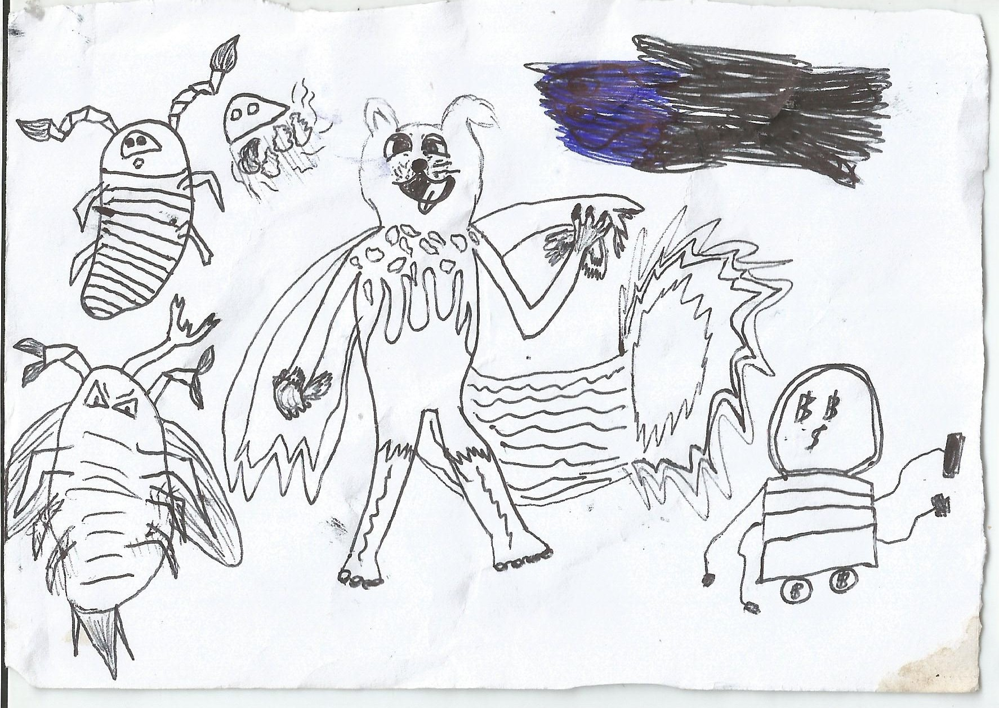

6th generation - 2020-2022
2020
There were Tamiguchos made in 2020, but they were lost (landlord in Curitiba probably vanished them bc even people he treated as trash, even more when it's not ppl but papers). Recovery possibility is minimal.
Was it a curse on every start of decade? My mons of 2010, also, I don't have 😜
2021

"Foto_2022-02-25_144138" (undefined name)
2022

Petalrock
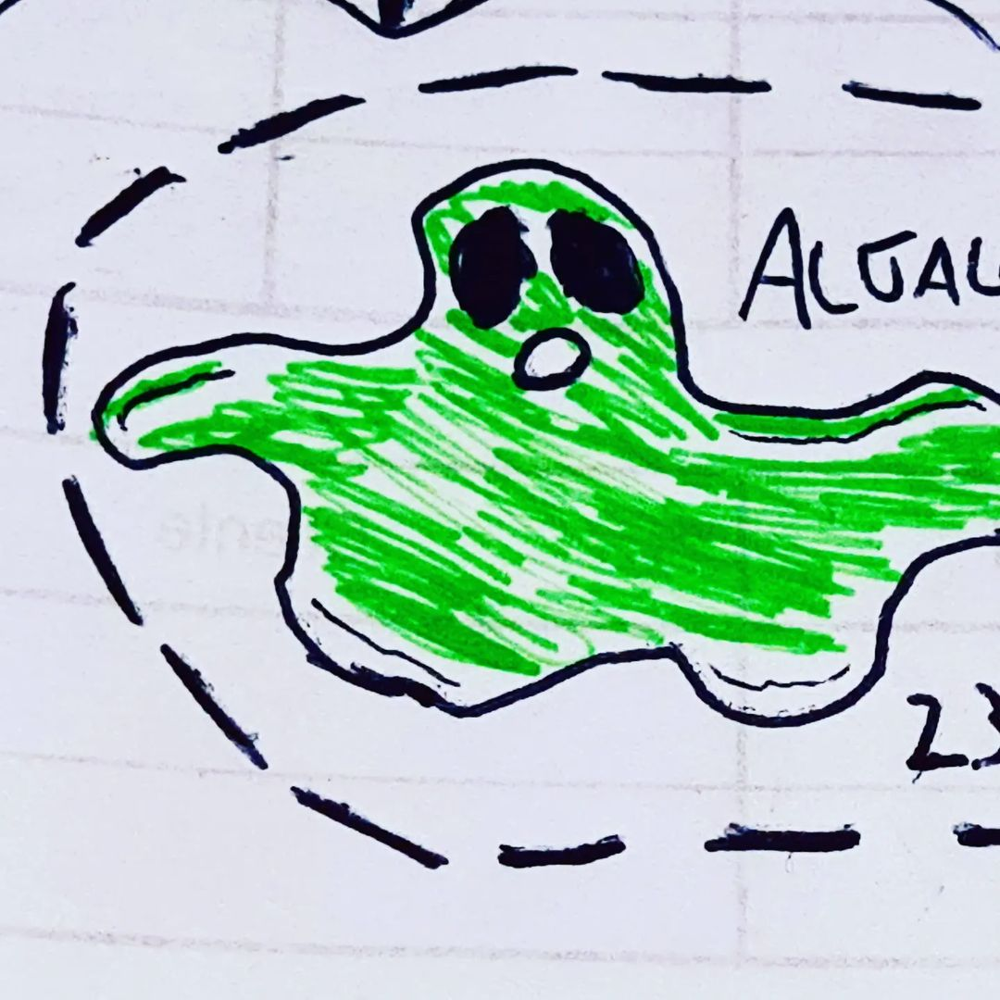
Algalone
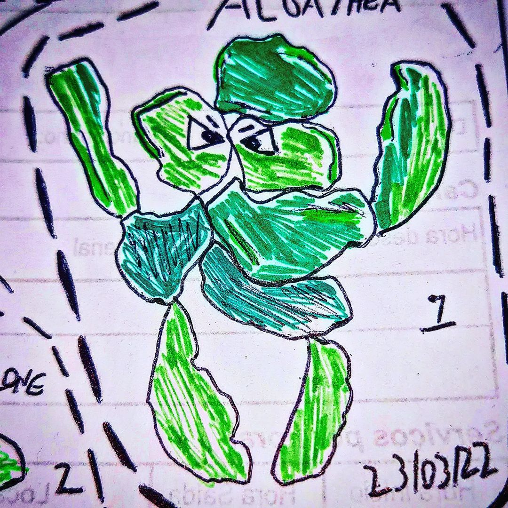
Algalthea
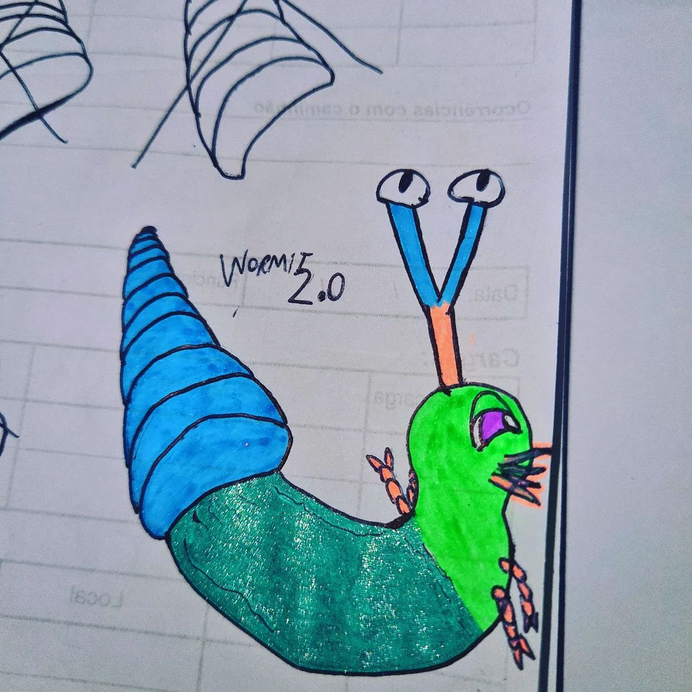
Wormit
Craboll

Ancientrumphet

"277249155_676324357029859_6416661177868556306_n" (undefined name)
Dolphnia
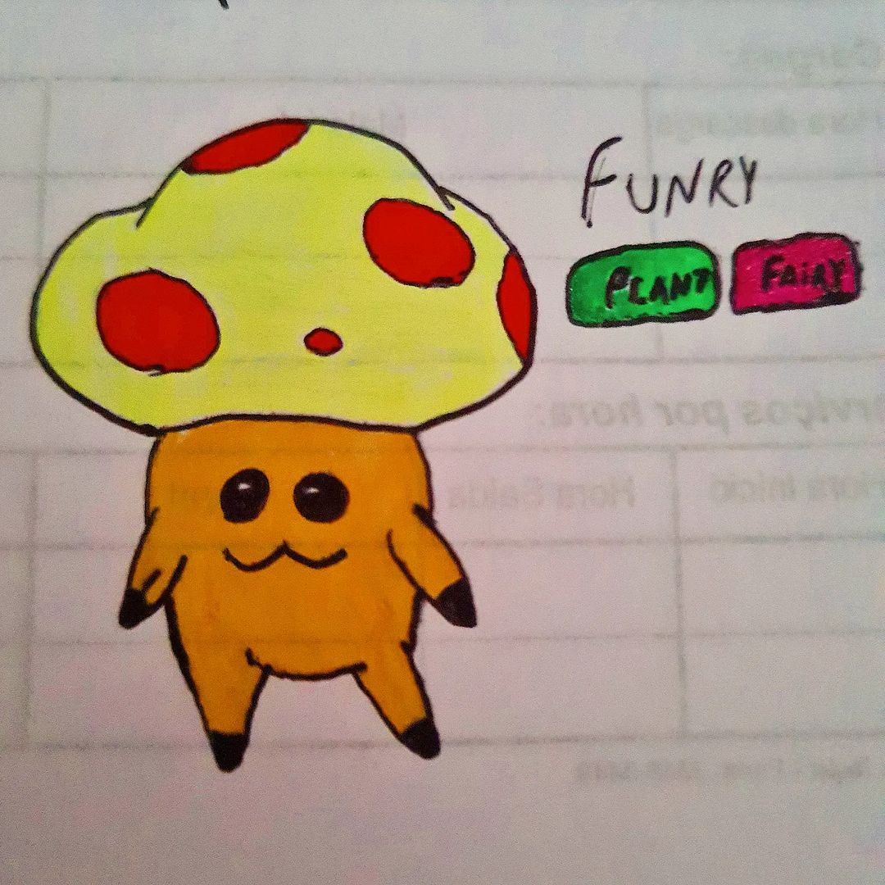
Funry ♂
Funry ♀